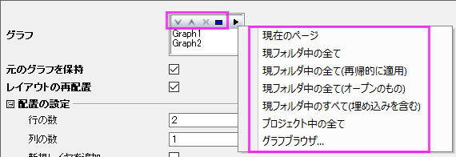

FAQ-139 複数のグラフウィンドウを1つに統合することはできますか?
MergeGraphs
最終更新日：2022/6/28
ワークスペース右側にある統合ボタンを使用するか、グラフ操作：グラフウィンドウの統合メニューを選択することで、複数のグラフを1つに統合できます。埋め込みグラフの場合、グラフが埋め込まれたシートをアクティブにします。メニューから編集：(埋め込み)グラフの統合を選択します。
- グラフボックスでは、上へ移動、下へ移動ボタンを使ってグラフの順序を変更したり、メニューを使ってグラフを取得できます。
- 
- 必要に応じて「プレビュー」ボタンをクリックしてプレビューを確認したり、「自動プレビュー」にチェックを付けて、設定変更毎にプレビューを更新して 表示できます。
- 統合後のグラフの行の数および列の数はを設定します。Note: 1x1に設定すると、全グラフをお互いに重ね合わせることができます。
- レイヤリンクにチェックを付けると、結果グラフでグラフがリンクされ、1つのレイヤのサイズ変更や移動したときに、他のレイヤも同じように操作できます。
- 各グラフでラベルを追加を使用します。
- 統合後、凡例を更新して全凡例を1つのボックスに組み合わせて表示できます。
- 凡例上で右クリックして凡例：凡例を更新を選択します。
- 更新モードを再構築に設定して、凡例を全てのページ用の1つの凡例にしてからOKをクリックします。
- Ctrlキーを押しながら凡例の隅をドラッグして配置を変更できます。

グラフウィンドウの統合ダイアログは、プレビューパネルがあるため多数のグラフウィンドウがある場合に動作が遅くなるん場合があります。このような場合、ダイアログを開かずにコマンドウィンドウで統合を実行する方が素早く操作できます。
以下のように操作します。
- プロジェクトエクスプローラで、標準ツールバーの新規プロジェクトボタンをクリックして、新しいフォルダを作成します。
- 新しく作成したフォルダに統合したいグラフを移動します。ここで、全てのグラフが開いた状態（非表示状態でない）であることを確認してください。（プロジェクトエクスプローラで、グラフをドラッグ&ドロップすることでフォルダ間を移動できます。）
- ウィンドウ：コマンドウィンドウを選択して、merge_graph を入力します。
- Enterを押すと、フォルダ内の全グラフを含む新しいグラフウィンドウが作成されます。
- 任意で、統合後レイヤの配置や順番を変更したい場合は、グラフ操作：レイヤ配置メニューでレイヤ配置ダイアログを開き、操作します。
キーワード:レイヤ,
単一, ページ